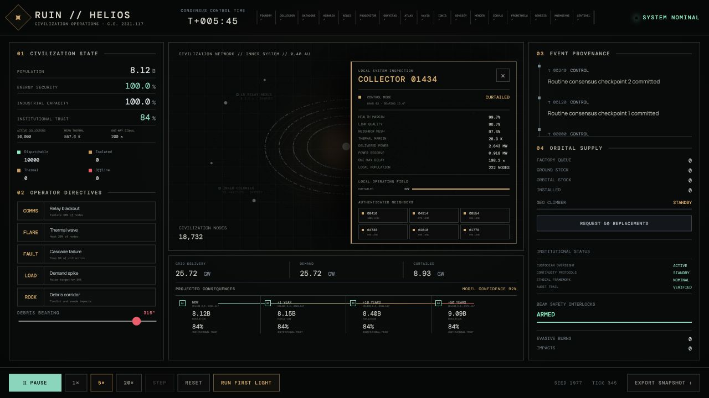

From radiotherapy to a star-sized system
I build mission-critical operational systems in domains where silent failure is unacceptable—first in radiotherapy, then as an open simulation laboratory for autonomous space infrastructure. RUIN asks what operations software might look like when no human command can arrive in time and one incorrect state can propagate across a civilization.
HELIOS is the first executable module: a deterministic browser simulation of 10,000 independent solar collectors operating at 0.4 AU. The network balances power demand against communication partitions, thermal limits, manufacturing requests, and cascading failure while preserving explicit safety invariants.
FIRST LIGHT is evidence, not a trailer
The commissioned failure campaign runs six checkpoints, injects a compound incident, removes unsafe capacity before dispatch, enters bounded local autonomy when links disappear, and tests whether recovery changes actual system state. It then executes the same campaign again and refuses to call the result reproducible unless both replay hashes agree.
The map is inspectable
Every sampled collector exposes its control mode, health, link and thermal margins, delivered power, nearby operating-state composition, authenticated neighbors, active hazards, and current autonomy recommendation. Operators can move through the mesh without leaving the situation room.

A laboratory larger than HELIOS
RUIN now contains executable studies for robotic factories, collector design, orbital agriculture, rotating habitats, stellar navigation, propulsion, repair robots, distributed datacores, civilian nuclear power, neural-identity evidence, and century-scale industrial bootstrap campaigns. Each module separates grounded physical kernels from speculative assumptions and documents what it must never claim.
The fiction asks who the model excluded
The same laboratory is becoming a human-scale science-fiction narrative. Season 01 — 99.97%의 구원 follows a junior simulation verifier who discovers that a perfect civilization-survival report was produced by changing who counts as a person. The system incidents provide the causal machinery; the story asks what a safety metric means when its denominator is political.
The boundary
This is science-fiction software built from real engineering ideas. It is not a claim that a Dyson swarm, mind transfer, transit gate, or self-replicating industrial civilization can be built with present technology. The value is in explicit assumptions, deterministic state, failure isolation, inspectable evidence, and tests that make speculation accountable.
← All projects